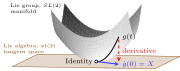

The group SL(2) is the group of 2x2 matrices with determinant 1. It is a fundamental example in the study of Lie groups and Lie algebras. The determinant of a matrix measures volume scaling. If you apply a linear transformation with matrix A to a region of space, the volume gets multiplied by \det(A). So \det=1 means volume preserving transformations. This is a very natural class of symmetries — transformations that don’t shrink or expand space, just reshape it.
A general element of this group can be written as:
g = \begin{pmatrix} a & b \\ c & d \end{pmatrix}
where a, b, c, d \in \mathbb{C} and the determinant is 1, i.e., ad - bc = 1.
Change of point of view. Each of the elements a,b,c,d is complex-valued, and we can imagine that every matrix in SL(2,\mathbb{C}) is a point in an 4-dimensional complex space \mathbb{C}^4 . However, the constraint that the determinant equals 1 reduces the degrees of freedom by 1, meaning that the group SL(2,\mathbb{C}) is a 3-dimensional surface embedded in a larger \mathbb{C}^4. If you prefer to think of 1 complex dimension as equivalent to 2 real dimensions, then just multiply all the dimensions by 2. This surface is curved, because of the nonlinear constraint ad - bc = 1. In mathematical parlance, we call this surface a manifold.
11.2 tangent space
Let’s parametrize each element of the 2x2 matrix in SL(2) with the variable t:
We can imagine that this parametrization defines a general curve in the manifold of SL(2). We will require that this curve passes through the identity element of SL(2) at t = 0:
What we will do now is to take the derivative of this curve with respect to the parameter t, which will give us a vector in the tangent space of SL(2) at each point:
\dot{g}(t) = \begin{pmatrix} \dot{a}(t) & \dot{b}(t) \\ \dot{c}(t) & \dot{d}(t) \end{pmatrix},
where the dot means “time derivative”.
Let’s now compute the derivative of the condition ad - bc = 1 with respect to t, and evaluate it at t = 0:
For convenience, we will call the tangent vector of g(t) at the identity X.
Let’s take stock of what happened. From Calculus (and Physics), we are used to the idea that taking the time-derivative of the position curve gives us a vector for the velocity. The velocity is tangent to the displacement curve at each point. That’s exactly what we did here, but we did it for all possible curves in the manifold that pass through the identity element of SL(2). By taking the derivative of the curves A(t) at t = 0 (at the identity element), we obtained vectors in the tangent space of SL(2) at that point. These new vectors have exactly the same dimension as the original (in this case 3 complex dimensions), but they live in a flat (Euclidean) space rather than in the curved manifold of SL(2).

The curved gray surface represents the manifold of SL(2), and the plane below it represents the tangent space at the identity element. An element in the manifold gets mapped by the derivative to a point in the tangent space.
11.3 back and forth between the group and the tangent space
We’ve seen that, starting from a curve g(t), we can get to an element of the tangent space X by taking its derivative at the identity:
g(t) \xrightarrow[]{\frac{d}{dt}} X.
How do we go back? Starting from X in the tangent space, how to get the curve g in the manifold? The answer is: exponentiation!
X \xrightarrow[]{\exp} g(t).
Let’s see how this works. X is a 2\times2 matrix, and its (parametric)exponential is
This is exactly the same formula for the exponent of scalars, but applied to matrices. Note that the identity matrix I takes the role of the number 1. The matrix X raised to any power is still a 2\times2 matrix. Therefore, the series above also gives as a result a 2\times2 matrix. Now, how can we know if this new matrix “lands” in the manifold, where the group elements live? We just need to check if the determinant of \exp(tX) is 1, if it is, we’re golden.
And this shows that exponentiating an element of the tangent space brings us to a curve g(t) in the manifold.
The proof is water tight, but somewhat not satisfying. I guessed that the solution was the exponential, and verified that it does the job. Why should the exponential appear in the first place?
The previous analogy between position and velocity will be useful. If a particle has position x(t) and constant velocity v, then for a very small time step \Delta t
v \approx \frac{x(t+\Delta t)-x(t)}{\Delta t}.
Rearranging,
x(t+\Delta t) \approx x(t) + \Delta t \cdot v.
So in ordinary Euclidean space, constant velocity means that each small time step updates the position by
x(t)\longmapsto x(t)+\Delta t\cdot v
The same idea works for a Lie group, except that the update operation is no longer addition. In a group, motions are composed by multiplication. Therefore, the analogue of adding a small displacement is multiplying by a small group element near the identity.
If g(t) is a curve in the manifold for which g(0)=I and \dot{g}(t)=X, we can rewrite its derivative by using the definition
We’ve reached the same result as before, but this time the exponential appears naturally from the derivation.
To sum up: taking the derivative of a curve g(t) in the manifold gives us the element X in the tangent space. Exponentiating X brings us back to g(t).
11.4 wait, what?
Is this correct? The derivative and the exponential are lanes travelling in opposite directions in the same road? Usually, we have the following pairs: (\exp,\log) and (\text{derivative},\text{integral}). Did we not just mix elements of these two pairs?
I will show now that, in a sense, taking the derivative or the log of a group element is the same. Conversely, exponentiating or integrating an element in the tangent space give the same result.
11.4.1 derivative = log
Let’s take a group element g close to the identity. We can write it as
g = I + \Delta t X + O(\Delta t^2),
where X is some matrix and \Delta t is small. Taking the log:
\log(g) = \log(I + \Delta t X + O(\Delta t^2)).
We now use the Taylor series for the log:
\log(g) = \log(I+\Delta t X) = \Delta t X - \frac{(\Delta t X)^2}{2} + \frac{(\Delta t X)^3}{3} - \ldots = \Delta t X + O(\Delta t^2).
To leading order in \Delta t, the log simply gives back \Delta t X, which is exactly the tangent vector X, up to the small parameter \Delta t.
Both the derivative and the log do the same job, they extract the linear part of the deviation from the identity. Differentiation gives the exact geometric definition for what the tangent space is, while the logarithm is a computational shortcut, it extracts the tangent vector from a specific point near the identity, without needing a whole curve in the manifold.
11.4.2 integral = exp
We’ve seen before that the rule for taking small steps along a curve g(t) is
It says that g(t) is not any curve on the manifold that passes through the identity. This is the one curve whose velocity at any point is proportional to itself!
Of course, we can solve this first-order differential equation by integrating it, giving what we found before: g(t)=\exp(tX). Thus we have shown that, in a sense, integration and exponentiation give the same thing.
11.5 the tangent space is a vector space
A vector space has the following property: if A and B are two vectors in the vector space, their linear combination \mu_1 A + \mu_2 B is also a vector belonging to this vector space. The one condition we know about the tangent space is that its elements are 2\times2 matrices with trace zero. So let’s use that to prove that our tangent space is a vector space. Using the fact that the trace operation is linear:
\text{trace}(\mu_1 A + \mu_2 B) = \mu_1 \underbrace{\text{trace}(A)}_{=0} + \mu_2 \underbrace{\text{trace}(B)}_{=0} = 0.
If you want to see this in extra detail, let’s write
An algebra is a vector space equipped with a special operation. The natural operation of vector spaces is the addition: you can add two vectors and get another vector. That’s not what I’m talking about. The extra operation also takes two vectors and return a third vector. What should this extra operation be? The answer is related to a concept we have not discussed yet: commutativity
11.7 commutativity
Putting one’s socks on, and then the shoes, is not the same as putting the shoes on and then the socks. The order of operations often matters.
When the order of two operations doesn’t affect the result, we say that the operations commute. Simple examples are the sum and product of two numbers
Maybe you’re thinking: “There are not two operations in the example above, there is only one sum and one product, one for each example! The numbers commute, not the operations!” Sure, this is a legitimate way of seeing things. Another way is to, in the summation example, see every number as its own summation operation, being applied on a “test element” x not shown. Let me spell out how this looks:
+3+5+x = +5+3+x = +15+x.
The same goes for the product: 2\cdot 7\cdot x = 7\cdot 2\cdot x.
11.8 non-commutativity
Of course, non-commutativity is the name we give to operations whose order does affect the result. I’ll give a concrete example here using rotations, and it turns out that this will be super useful to us. Rotations in 3d space are a special case inside the bigger Lie group SL(2). I’ll use rotations because this is something we have lots of intuition on from day-to-day experience.
We will talk about rotation using the image of Earth. See the widget below.
On the left we see Earth with a head-on view of the equator, centered at the meridian 75E, making India right at the center.
On the center we can slide the slider labeled g(t), to spin Earth to the right (eastward), so that by the end of the slider Earth has rotated 75 degrees, and now we see the zero meridian at Greenwich at the center.
On the right we can slide the slider labeled k(t), to tilt Earth counter-clockwise on the plane of the screen where you’re seeing this image, so that by the end of the slider Earth has tilted 23.44 degrees.
The question now is: does the order or operations matter? Spinning to the right and then tilting is the same as the opposite order? Let’s see this in action. In the widget below:
On the globe on the left, first slide A(t) on the top and then B(t) at the bottom.
On the globe on the right, slide first B(t) and then A(t).
Show the code
{const W=280, H=340, R=115, cx=W/2, cy=165, ext=40, gap=20;const BG='#dddddd', OCEAN='#84a1b7', π=Math.PI;// ── explicit 3×3 rotation matrices in the fixed observer frame ────────────// screen/view convention:// x = viewing direction, y = screen horizontal, z = screen vertical//// a = Rz: eastward rotation around the fixed screen-vertical axis// b = Rx: tilt/roll around the fixed viewing axis, so the pole tilts in screen planefunctionRz(deg) {const c=Math.cos(deg*π/180), s=Math.sin(deg*π/180);return [[c,-s,0],[s,c,0],[0,0,1]]; }functionRx(deg) {const c=Math.cos(deg*π/180), s=Math.sin(deg*π/180);return [[1,0,0],[0,c,-s],[0,s,c]]; }functionmul(A,B) {const C=[[0,0,0],[0,0,0],[0,0,0]];for(let i=0;i<3;i++) for(let j=0;j<3;j++) for(let k=0;k<3;k++) C[i][j]+=A[i][k]*B[k][j];return C; }functionapplyM(M, lon, lat) {const φ=lat*π/180, λ=lon*π/180;const x=Math.cos(φ)*Math.cos(λ);const y=Math.cos(φ)*Math.sin(λ);const z=Math.sin(φ);const rx=M[0][0]*x+M[0][1]*y+M[0][2]*z;const ry=M[1][0]*x+M[1][1]*y+M[1][2]*z;const rz=M[2][0]*x+M[2][1]*y+M[2][2]*z;return [Math.atan2(ry,rx)*180/π,Math.asin(Math.max(-1,Math.min(1,rz)))*180/π ]; }const INIT =Rz(-75);functionmakeSlider(label, min, max, step, init) {const wrap=document.createElement('div'); wrap.style.cssText='margin-bottom:5px';const lbl=document.createElement('label'); lbl.textContent=label; lbl.style.cssText='color:black;font-family:Arial,sans-serif;font-size:13px;'+'font-weight:bold;display:block;margin-bottom:1px';const inp=document.createElement('input'); inp.type='range'; inp.min=min; inp.max=max; inp.step=step; inp.value=init; inp.style.cssText='width:100%;display:block;cursor:pointer;margin:0'; wrap.append(lbl,inp);return {wrap,inp}; }const {wrap:wLA,inp:iLA}=makeSlider('g(t)',0,75,1,0);const {wrap:wLB,inp:iLB}=makeSlider('k(t)',0,23.44,0.1,0);const {wrap:wRB,inp:iRB}=makeSlider('k(t)',0,23.44,0.1,0);const {wrap:wRA,inp:iRA}=makeSlider('g(t)',0,75,1,0);const container=document.createElement('div'); container.style.cssText=`background:${BG};padding:8px;display:flex;`+`gap:${gap}px;width:${2*W+gap+16}px;box-sizing:border-box;align-items:flex-start`;const colL=document.createElement('div'); colL.style.cssText=`width:${W}px;flex-shrink:0`;const svgL=d3.create('svg').attr('width',W).attr('height',H).style('background',BG).node(); colL.append(wLA,wLB,svgL);const colR=document.createElement('div'); colR.style.cssText=`width:${W}px;flex-shrink:0`;const svgR=d3.create('svg').attr('width',W).attr('height',H).style('background',BG).node(); colR.append(wRB,wRA,svgR); container.append(colL,colR);functiondraw(svgNode, M) {const svg=d3.select(svgNode); svg.selectAll('*').remove();const fn=(lon,lat)=>applyM(M,lon,lat);const baseProj=d3.geoOrthographic().scale(R).translate([cx,cy]).rotate([0,0,0]);const customProj={stream(sink){const ps=baseProj.stream(sink);return {point(lon,lat){const [rl,rp]=fn(lon,lat); ps.point(rl,rp); },lineStart(){ ps.lineStart(); },lineEnd(){ ps.lineEnd(); },polygonStart(){ ps.polygonStart(); },polygonEnd(){ ps.polygonEnd(); },sphere(){ if(ps.sphere) ps.sphere(); } }; } };const path=d3.geoPath(customProj);functionproject(lon,lat){const [rl,rp]=fn(lon,lat);returnbaseProj([rl,rp]); }const npPx=project(0,90)??[cx,cy-R];const spPx=project(0,-90)??[cx,cy+R];const dx=npPx[0]-spPx[0];const dy=npPx[1]-spPx[1];const len=Math.sqrt(dx*dx+dy*dy)||1;const ux=dx/len;const uy=dy/len;const poleDepth=M[0][2];const eps=0.01;functiondrawAxisSegment(parent, polePx, sign) {const tx=polePx[0]+sign*ux*ext;const ty=polePx[1]+sign*uy*ext; parent.append('line').attr('x1',polePx[0]).attr('y1',polePx[1]).attr('x2',tx).attr('y2',ty).attr('stroke','#e17701').attr('stroke-width',2.5); parent.append('circle').attr('cx',tx).attr('cy',ty).attr('r',3.5).attr('fill','#e17701'); }// draw the back-facing axis segment first, so the globe occludes itif(poleDepth > eps){drawAxisSegment(svg, spPx,-1); } elseif(poleDepth <-eps){drawAxisSegment(svg, npPx,1); } svg.append('circle').attr('cx',cx).attr('cy',cy).attr('r',R).attr('fill',OCEAN); svg.append('path').datum(d3.geoGraticule().step([15,90])()).attr('fill','none').attr('stroke','rgba(200,200,200,0.40)').attr('stroke-width',0.7).attr('d',path); svg.append('path').datum({type:'LineString',coordinates:d3.range(-180,181,1).map(l=>[l,0])}).attr('fill','none').attr('stroke','rgba(255,255,180,0.35)').attr('stroke-width',1).attr('d',path); svg.append('path').datum(topojson.feature(world,world.objects.land)).attr('fill','#2d6a1f').attr('d',path); svg.append('path').datum(topojson.mesh(world,world.objects.countries)).attr('fill','none').attr('stroke','rgba(255,255,255,0.35)').attr('stroke-width',0.5).attr('d',path); svg.append('circle').attr('cx',cx).attr('cy',cy).attr('r',R).attr('fill','none').attr('stroke','rgba(0,0,0,0.20)').attr('stroke-width',1);// draw the front-facing axis segment last, so it appears to emerge from the globeif(poleDepth > eps){drawAxisSegment(svg, npPx,1); } elseif(poleDepth <-eps){drawAxisSegment(svg, spPx,-1); } else {drawAxisSegment(svg, npPx,1);drawAxisSegment(svg, spPx,-1); }}// ── stateful ambient-frame updates ────────────────────────────────────────//// important:// slider values are not recomputed into a fresh matrix.// instead, each slider movement applies the delta since the previous value.// this preserves the historical order in which the user moved the sliders.const stateL = {M: INIT,A:+iLA.value,B:+iLB.value };const stateR = {M: INIT,A:+iRA.value,B:+iRB.value };functionredraw(){draw(svgL,stateL.M);draw(svgR,stateR.M); } iLA.addEventListener('input',() => {const next=+iLA.value;const delta=next-stateL.A; stateL.M=mul(Rz(delta),stateL.M); stateL.A=next;redraw(); }); iLB.addEventListener('input',() => {const next=+iLB.value;const delta=next-stateL.B; stateL.M=mul(Rx(delta),stateL.M); stateL.B=next;redraw(); }); iRA.addEventListener('input',() => {const next=+iRA.value;const delta=next-stateR.A; stateR.M=mul(Rz(delta),stateR.M); stateR.A=next;redraw(); }); iRB.addEventListener('input',() => {const next=+iRB.value;const delta=next-stateR.B; stateR.M=mul(Rx(delta),stateR.M); stateR.B=next;redraw(); });redraw();return container;}
Did you get the same thing? No! If you think there’s something suspicious with this simulations, just take any object around you and try it yourself. I recomment doing 90-degree rotations because it’s just easier to keep track of what’s going on.
The conclusion: the order of operation matters when we’re dealing with rotations.
11.9 quantifying the non-commutativity
Ok, the order of operation matters, but how much? Is the difference barely perceptible, or super consequential? How to quantify it? We are wondering, “is gk equal to kg?”
gk \stackrel{?}{=} kg
In order to find the difference between the two sides of the equation, ideally I would subtract the same quantity from both sides. Unfortunately, groups only have multiplication and the inverse, not addition/subtraction. To measure the effect of doing operations in different orders, we right-multiply both sides of the equation by g^{-1} and then right-multiply again by k^{-1}. We get:
gkg^{-1}k^{-1} \stackrel{?}{=} I.
Conjugations of group operations are read right-to-left, so the left-hand side above, called group commutator, says: “apply k^{-1}, then g^{-1}, then k and finally g. The question mark on top of the equal sign is asking:”if we did all that, would the final result bring us back home, to our starting place?”
Let’s see that in action with globe rotations. Slide each of the sliders from top to bottom and see if the result equals to the unchanged globe on the right.
Show the code
{const W=280, H=340, R=115, cx=W/2, cy=165, ext=40, gap=20;const BG='#dddddd', OCEAN='#84a1b7', π=Math.PI;// ── explicit 3×3 rotation matrices in the fixed observer frame ────────────// screen/view convention:// x = viewing direction, y = screen horizontal, z = screen vertical//// g = Rz: eastward rotation around the fixed screen-vertical axis// k = Rx: tilt/roll around the fixed viewing axis, so the pole tilts in screen planefunctionRz(deg) {const c=Math.cos(deg*π/180), s=Math.sin(deg*π/180);return [[c,-s,0],[s,c,0],[0,0,1]]; }functionRx(deg) {const c=Math.cos(deg*π/180), s=Math.sin(deg*π/180);return [[1,0,0],[0,c,-s],[0,s,c]]; }functionmul(A,B) {const C=[[0,0,0],[0,0,0],[0,0,0]];for(let i=0;i<3;i++) for(let j=0;j<3;j++) for(let k=0;k<3;k++) C[i][j]+=A[i][k]*B[k][j];return C; }functionapplyM(M, lon, lat) {const φ=lat*π/180, λ=lon*π/180;const x=Math.cos(φ)*Math.cos(λ);const y=Math.cos(φ)*Math.sin(λ);const z=Math.sin(φ);const rx=M[0][0]*x+M[0][1]*y+M[0][2]*z;const ry=M[1][0]*x+M[1][1]*y+M[1][2]*z;const rz=M[2][0]*x+M[2][1]*y+M[2][2]*z;return [Math.atan2(ry,rx)*180/π,Math.asin(Math.max(-1,Math.min(1,rz)))*180/π ]; }const INIT =Rz(-75);functionmakeSlider(label, min, max, step, init) {const wrap=document.createElement('div'); wrap.style.cssText='margin-bottom:5px';const lbl=document.createElement('label'); lbl.innerHTML=label; lbl.style.cssText='color:black;font-family:Arial,sans-serif;font-size:13px;'+'font-weight:bold;display:block;margin-bottom:1px';const inp=document.createElement('input'); inp.type='range'; inp.min=min; inp.max=max; inp.step=step; inp.value=init; inp.style.cssText='width:100%;display:block;cursor:pointer;margin:0'; wrap.append(lbl,inp);return {wrap,inp}; }functionmakeHiddenSliderSpacer(label, min, max, step, init) {const {wrap}=makeSlider(label, min, max, step, init); wrap.style.visibility='hidden'; wrap.style.pointerEvents='none';return wrap; }const {wrap:wLKi,inp:iLKi}=makeSlider('k<sup>−1</sup>(t)',0,23.44,0.1,0);const {wrap:wLGi,inp:iLGi}=makeSlider('g<sup>−1</sup>(t)',0,75,1,0);const {wrap:wLK,inp:iLK}=makeSlider('k(t)',0,23.44,0.1,0);const {wrap:wLG,inp:iLG}=makeSlider('g(t)',0,75,1,0);const container=document.createElement('div'); container.style.cssText=`background:${BG};padding:8px;display:flex;`+`gap:${gap}px;width:${2*W+gap+16}px;box-sizing:border-box;align-items:flex-start`;const colL=document.createElement('div'); colL.style.cssText=`width:${W}px;flex-shrink:0`;const svgL=d3.create('svg').attr('width',W).attr('height',H).style('background',BG).node(); colL.append(wLKi,wLGi,wLK,wLG,svgL);const colR=document.createElement('div'); colR.style.cssText=`width:${W}px;flex-shrink:0`;const svgR=d3.create('svg').attr('width',W).attr('height',H).style('background',BG).node(); colR.append(makeHiddenSliderSpacer('k<sup>−1</sup>(t)',0,23.44,0.1,0),makeHiddenSliderSpacer('g<sup>−1</sup>(t)',0,75,1,0),makeHiddenSliderSpacer('k(t)',0,23.44,0.1,0),makeHiddenSliderSpacer('g(t)',0,75,1,0), svgR ); container.append(colL,colR);functiondraw(svgNode, M) {const svg=d3.select(svgNode); svg.selectAll('*').remove();const fn=(lon,lat)=>applyM(M,lon,lat);const baseProj=d3.geoOrthographic().scale(R).translate([cx,cy]).rotate([0,0,0]);const customProj={stream(sink){const ps=baseProj.stream(sink);return {point(lon,lat){const [rl,rp]=fn(lon,lat); ps.point(rl,rp); },lineStart(){ ps.lineStart(); },lineEnd(){ ps.lineEnd(); },polygonStart(){ ps.polygonStart(); },polygonEnd(){ ps.polygonEnd(); },sphere(){ if(ps.sphere) ps.sphere(); } }; } };const path=d3.geoPath(customProj);functionproject(lon,lat){const [rl,rp]=fn(lon,lat);returnbaseProj([rl,rp]); }const npPx=project(0,90)??[cx,cy-R];const spPx=project(0,-90)??[cx,cy+R];const dx=npPx[0]-spPx[0];const dy=npPx[1]-spPx[1];const len=Math.sqrt(dx*dx+dy*dy)||1;const ux=dx/len;const uy=dy/len;const poleDepth=M[0][2];const eps=0.01;functiondrawAxisSegment(parent, polePx, sign) {const tx=polePx[0]+sign*ux*ext;const ty=polePx[1]+sign*uy*ext; parent.append('line').attr('x1',polePx[0]).attr('y1',polePx[1]).attr('x2',tx).attr('y2',ty).attr('stroke','#e17701').attr('stroke-width',2.5); parent.append('circle').attr('cx',tx).attr('cy',ty).attr('r',3.5).attr('fill','#e17701'); }// draw the back-facing axis segment first, so the globe occludes itif(poleDepth > eps){drawAxisSegment(svg, spPx,-1); } elseif(poleDepth <-eps){drawAxisSegment(svg, npPx,1); } svg.append('circle').attr('cx',cx).attr('cy',cy).attr('r',R).attr('fill',OCEAN); svg.append('path').datum(d3.geoGraticule().step([15,90])()).attr('fill','none').attr('stroke','rgba(200,200,200,0.40)').attr('stroke-width',0.7).attr('d',path); svg.append('path').datum({type:'LineString',coordinates:d3.range(-180,181,1).map(l=>[l,0])}).attr('fill','none').attr('stroke','rgba(255,255,180,0.35)').attr('stroke-width',1).attr('d',path); svg.append('path').datum(topojson.feature(world,world.objects.land)).attr('fill','#2d6a1f').attr('d',path); svg.append('path').datum(topojson.mesh(world,world.objects.countries)).attr('fill','none').attr('stroke','rgba(255,255,255,0.35)').attr('stroke-width',0.5).attr('d',path); svg.append('circle').attr('cx',cx).attr('cy',cy).attr('r',R).attr('fill','none').attr('stroke','rgba(0,0,0,0.20)').attr('stroke-width',1);// draw the front-facing axis segment last, so it appears to emerge from the globeif(poleDepth > eps){drawAxisSegment(svg, npPx,1); } elseif(poleDepth <-eps){drawAxisSegment(svg, spPx,-1); } else {drawAxisSegment(svg, npPx,1);drawAxisSegment(svg, spPx,-1); } }// ── stateful ambient-frame updates ────────────────────────────────────────//// important:// slider values are not recomputed into a fresh matrix.// instead, each slider movement applies the delta since the previous value.// this preserves the historical order in which the user moved the sliders.const stateL = {M: INIT,Ki:+iLKi.value,Gi:+iLGi.value,K:+iLK.value,G:+iLG.value };functionredraw(){draw(svgL,stateL.M);draw(svgR,INIT); } iLKi.addEventListener('input',() => {const next=+iLKi.value;const delta=next-stateL.Ki; stateL.M=mul(Rx(-delta),stateL.M); stateL.Ki=next;redraw(); }); iLGi.addEventListener('input',() => {const next=+iLGi.value;const delta=next-stateL.Gi; stateL.M=mul(Rz(-delta),stateL.M); stateL.Gi=next;redraw(); }); iLK.addEventListener('input',() => {const next=+iLK.value;const delta=next-stateL.K; stateL.M=mul(Rx(delta),stateL.M); stateL.K=next;redraw(); }); iLG.addEventListener('input',() => {const next=+iLG.value;const delta=next-stateL.G; stateL.M=mul(Rz(delta),stateL.M); stateL.G=next;redraw(); });redraw();return container;}
Now it’s time to quantify by how much the result we got on the left if different from that on the right. The sliders g and k applied rotations of 75 and 23.44 degrees, respectively. We will quantify the group commutator by taking infinitesimal rotations. Taking advantage of the fact that we can express group elements and the exponentiation of the tangent space elements, we will write
g = \exp(\epsilon A),\qquad k = \exp(\epsilon B),
where is a small parameter. If g(t)=\exp(tA), then think of g = \exp(\epsilon A) as leaving from the identity and following the curve g(t) for a very small time interval \epsilon. The group commutator then reads
\begin{align*}
gkg^{-1}k^{-1} =& e^{\epsilon A}e^{\epsilon B}e^{-\epsilon A}e^{-\epsilon B} \\
=& (I + \epsilon A + \tfrac{\epsilon^2}{2} A^2 \ldots) \times \\
=& (I + \epsilon B + \tfrac{\epsilon^2}{2} B^2 \ldots) \times \\
=& (I - \epsilon A + \tfrac{\epsilon^2}{2} A^2 \ldots) \times \\
=& (I - \epsilon B + \tfrac{\epsilon^2}{2} B^2 \ldots) \\
=& \\
\text{order }\epsilon^0:&\quad I + \\
\text{order }\epsilon^1:&\quad \epsilon(A+B-A-B) + \\
\text{order }\epsilon^2:&\quad \epsilon^2(AB-A^2-AB-BA-B^2+AB + \\
&\quad \phantom{\epsilon^2(}\tfrac{\epsilon^2}{2} A^2+\tfrac{\epsilon^2}{2} B^2+\tfrac{\epsilon^2}{2} A^2+\tfrac{\epsilon^2}{2} B^2 ) + \\
&\text{higher order terms in }\epsilon
\end{align*}
All the terms in order \epsilon^1 cancel out, and many of the terms in order \epsilon^2 cancel out too, but not all. The result is:
gkg^{-1}k^{-1} = I + \epsilon^2\left(AB-BA\right) + O(\epsilon^3)
So now we can answer our question: how different is the group commutator from the identity? The difference is small, but not zero. There are no terms of order \epsilon, while the terms of order \epsilon^2 give a nice expression, AB-BA. Because A and B are elements of the algebra, we call this the algebra commutator, and we express it with the square brackets [A,B], called Lie brackets.
We can now go back to talking about why the tangent space we found is “an algebra”. We showed that the tangent space is a vector space. This is the first requirement. The second, is that this vector space is equipped with an extra operator that takes to elements in the vector space and returns another element in the space. This special operator is the Lie bracket [A,B]=AB-BA. We have to show that the result also lives in the tangent space. We will remember that any element in the tangent space is a 2\times 2 matrix with trace zero, so let’s compute AB-BA explicitly: